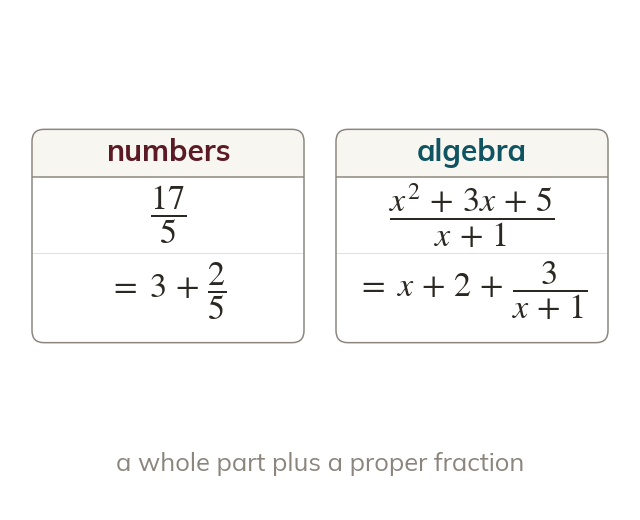
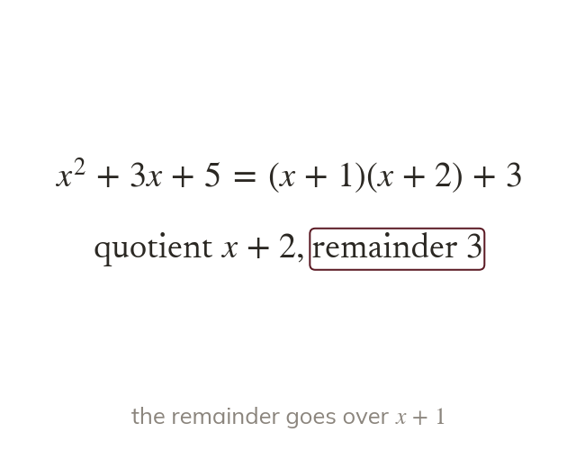
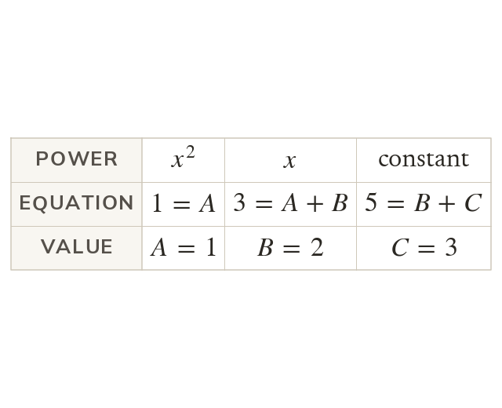
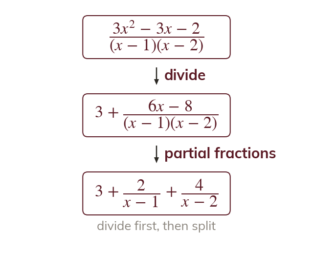
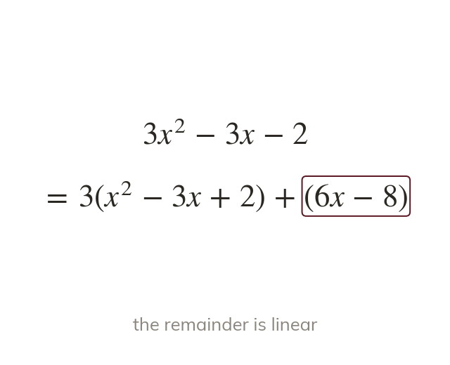
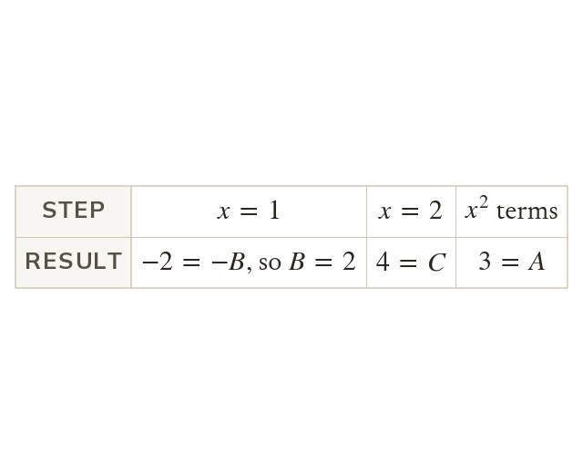

Proper or improper
A fraction is improper when its numerator's degree is at least its denominator's. Like it splits into a whole part and a proper fraction.
When the numerator's degree is not less than the denominator's, divide first, as becomes
This completes the chapter's partial fractions; the binomial expansions of chapter use the same forms.
Work down the page at your own pace. Write every answer in your book first, then click to check it.
Read each card, then follow the worked examples one step at a time.

A fraction is improper when its numerator's degree is at least its denominator's. Like it splits into a whole part and a proper fraction.

Algebraic division gives the quotient and the remainder. The remainder goes over the divisor.

Write the numerator as (Ax + Compare the coefficients of each power of
Pick an answer. If it's wrong, the feedback tells you which mistake it was.
Write the blanks in your book first, then tap each one to check.
Read each card, then follow the worked examples one step at a time.

Over a quadratic denominator, a quadratic numerator leaves a constant quotient. The proper part left over is then split into partial fractions.

Expand the denominator to
Then

Write the answer in the form and multiply through. The roots give and and the coefficients give
Pick an answer. If it's wrong, the feedback tells you which mistake it was.
Write the blanks in your book first, then tap each one to check.
Finished? Next lesson: 13.P4.1 Expanding (1 + x)ⁿ.
For each skill, tap the one that is true for you today. Your Revise pages start with anything you mark Not yet.
Your ratings are saved on this device only.